>
分享5个Claude Code + 飞书的超实用Agent办公玩法。
最近很多人也在问我，我用Agent，是怎么跟很多数据进行交互的。
我说我其实分的比较开，一部分是本地数据，一部分是在飞书上的云端数据，我们公司现在将近30号人，我对大家的要求是，需要跟同事协同的，都一律上云。
所以其实很多的交互，都是我让Claude Code直接跟飞书进行交互的，包括我们公司小伙伴也是，大家用图形化界面的时间占比，反而变得越来越少了。
之前飞书CLI第一次开源出来的时候，我写过一篇，刚刚，飞书CLI开源，Claude Code也可以丝滑操控飞书了。数据非常好。
但是现在其实已经过去一个月了，从之前的那一些能力，飞书一直在背后默默的加，加到昨天我统计了一下，将近120项。
有点过于离谱了，CLI开放的能力，都已经快追上API了，这个其实是有点离谱的。
现在，你用比如Claude Code之类的操控飞书，如果要求没有那么高那么极客的话，几乎所有的事情，你都可以做了。
他们把能力大全现在也已经上到飞书开放平台了。
网址在此：
https://open.feishu.cn/changelog?abilityType=Tool
而GitHub上，飞书CLI甚至star数都已经快过万了。
所以，我也想给大家分享一下，我们自己用Agent跟飞书CLI交互的案例，我觉得还是蛮有意思的。
过程中是真的有好几个让我非常惊艳的瞬间。
话不多说，直接开始。
1. 给每个会议系列养一个跨场次的知识库
第一个想分享的，是我们已经开始用、并且发现真的很有价值的场景，给每个会议系列养一个跨场次的知识库。
我们公司内部，每周都有培训会、周会、复盘会，反正这种重复发生的会一抓一大把。
但这种会都有个共同的毛病，开完之后，妙记都躺在飞书里，最多会后当时翻一翻，长期上是没人做追踪的。
时间一长，问题其实就出来了。
比如，我们有一次在选题会上讨论过的一个长线选题，事件本身是假期之后才会发生的，当时所有人都觉得这个不错，结果假一过回来上班，就没人再提过这事了。。。
又比如，每次招新伙伴进来，我其实是希望他能比较快地知道我们选题会的流程，了解我们对选题的要求和偏好，而这些长期堆下来的真实选题会数据，恰好就是新伙伴最好的入门材料。
但是没人整理、没人沉淀，过去这些就纯纯是浪费。
就拿我们的选题会的例子，隐私起见，我用的是3月份的数据。
当你有了飞书CLI之后，你就可以直接在claude code里，调用飞书的CLI来进行交互。
很快他就给我生成了一份飞书文档。

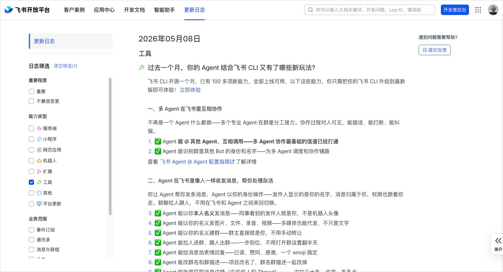
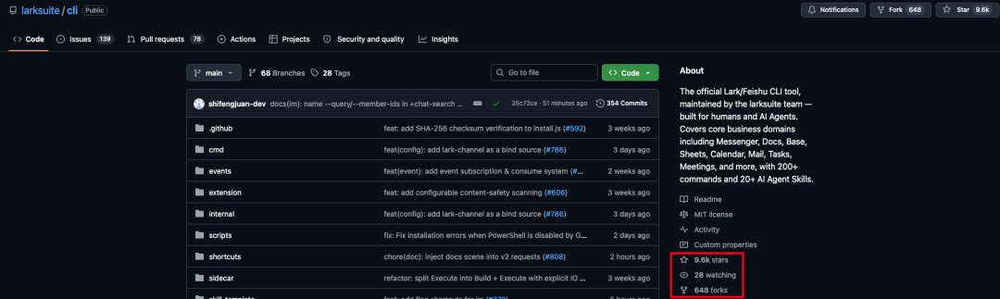
会议清单、选题转化分析、会议节奏、决策机制、现象、建议，全都有。
真的，Agent直接接入飞书拿数据，然后整理一个这样的内容，真的就是究极舒适区，以前真的导出下来手动用Agent整理，非常非常的麻烦。
反正就是究极全面详细，每一场选题会，讨论的选题，最后的决议以及对应的理由全都有。
它这里面很多信息都是可以沉淀到知识库里面的经验素材。
那这样重复的会议的经验留存，可以复用到各个方面，并且直接存成一个固定的知识库，方便我们以后进行各种各样的知识存档。
公司内部的培训会也是一样，直接让他先把过去的培训会抓出来，沉淀成知识库。
后续隔一段时间让他自动去抓相关的会议信息，自动更新维护，不过就是打开Claude code一句话的事。
而这些知识库积累下来，我相信对每一个公司都是很珍贵的经验。
2. Agent+飞书做工作整体复盘
第二个用法是我们同事非常喜欢的，就是给自己做一下全面的工作复盘。
就像我老是说，我们公司是完全长在飞书上面的，所有同事每天都在飞书里面工作。
留下的各种数据其实非常珍贵，但分散在私信、群聊、会议、妙记、日程、任务、邮件、文档、OKR这一堆地方，我们自己根本没办法对自己做横切面分析。
所以，这种事，就非常适合扔给Agent去干。
比如，我们有小伙伴，让它把过去7天、30天或者90天里这些数据一口气全拉一遍，有了这些数据，可以做的事情就很多了。
这个我们小伙伴甚至直接做成了一个skill，放到公司内部的Skill Hub上给所有小伙伴用。
我拿一个小伙伴的账号来演示了一下，给他做一份季度报告。
直接一句话启动。
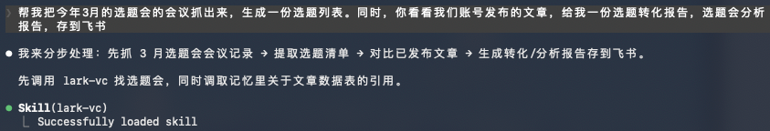
然后，它就会分8路并行去抓消息、会议、妙记、日程、任务、邮件、文档、OKR数据进行分析。
最后，它会生成一份非常全面的文档，里面有一句话总结、时间投入分布、协作情况、主要项目、产出，还有它对这些数据的一些洞察和建议。
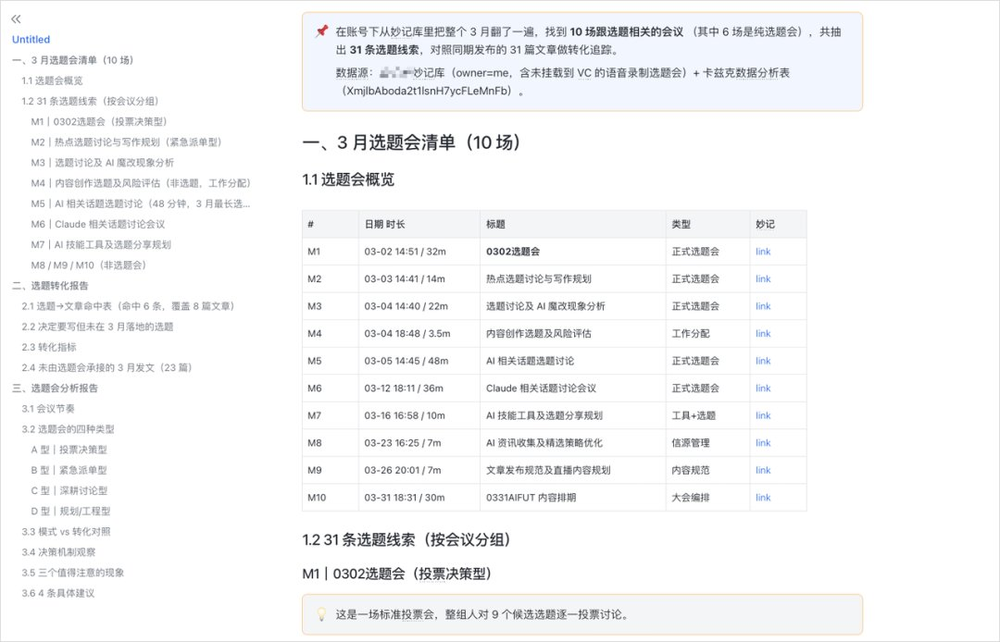
比如它会发现某个项目的排期漏了。
建议把飞书"文件传输助手"里的东西每个月沉淀成结构化文档。
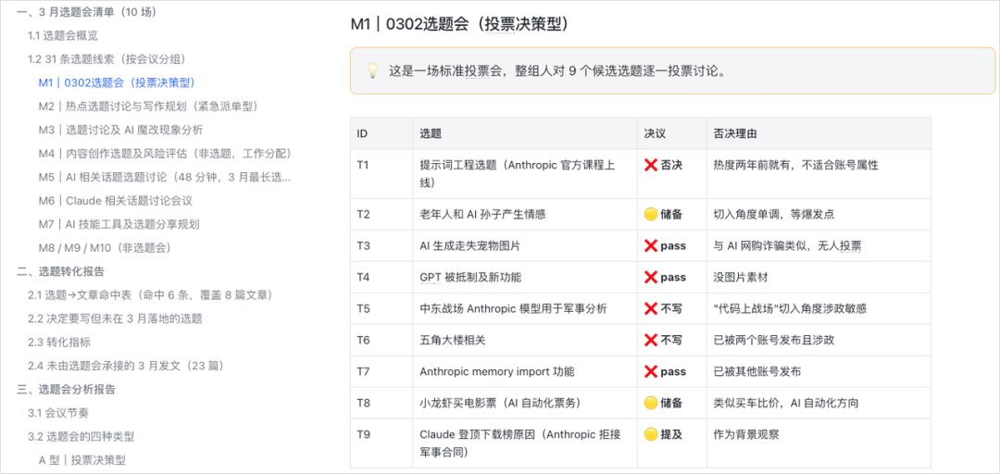
末尾还附上了一份完整的季度汇报。
因为飞书上有大量真实的context，所以它生成的文档是真的能拿出去用的，不是那种凑字数的水货报告。
而且这只是起点。
后续你可以根据自己的需求，把这个画像做成网页、PPT、多维表格看板，都很丝滑。
思考有了，产出有了，但是其实有没有占用太多时间去做一些无意义的执行，我觉得就很棒。
3. 重复性对接流程自动化
第三个是我最有成就感的一个。
我们因为有很大一部分收入，其实是我们的AI领域的媒介和MCN的业务，然后我们有自己的经纪团队，因为我们每个月都要给博主来打款，所以经纪部门每个月固定时间要跟合作博主对账，确认金额、确认项目、确认有没有漏单。
之前的玩法是，Agent能帮我们去多维表格里把项目和金额查出来，但最后一公里还是人去聊，我们每个月要对接几百个博主，我们的经纪人其实只有3个，所以他们要把对账明细贴到群里，等博主回，根据博主反馈再分流到不同同事手里，重复的沟通其实非常多。
那现在，飞书开放了这个CLI的能力以后，这个流程其实就可以用Agent开发一个小东西，全面的放在飞书机器人上，交给机器人来跑。
所以我们也开始做了内部迭代，这次跑的流程是这样，先把博主和机器人拉进同一个群，群里@机器人对一下账，机器人去多维表格里把这个博主相关的项目数据查出来，在群里@博主，把这个月所有合作的项目、金额、备注列清楚，让博主确认。
博主反馈之后@机器人，机器人按反馈内容自动分流。金额不对就通知商务那边核对刊例，漏单就通知财务那边补单，没问题就@我表示对账完成。
我也是简单粗暴地直接语音转文字，口喷我的需求，说了一大堆。
因为有了飞书CLI，所以开放机器人的成本，也变的无限低了，你根本不需要知道什么是API，什么是事件回调啥的，直接就干完了。
然后我把建的机器人和博主拉进一个群聊。
这里为了保护博主隐私，就用的假数据，并且用同事的账号进行测试。
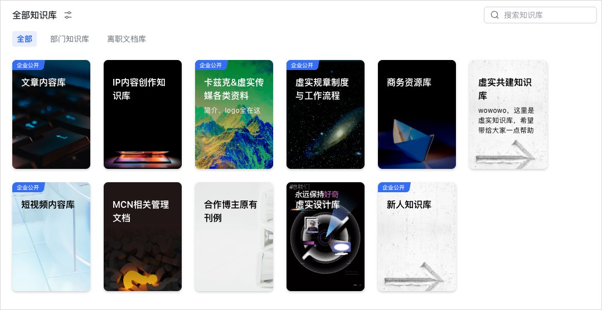
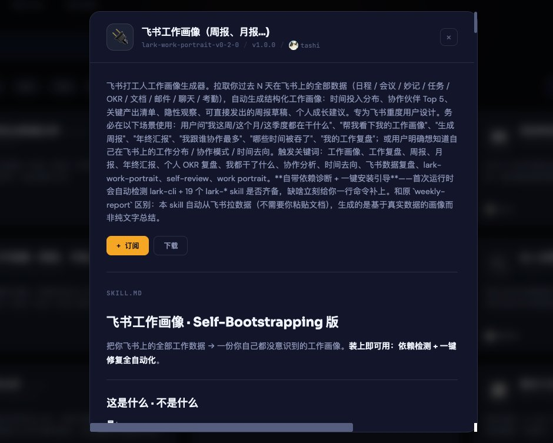
我们在群里直接@机器人让他对账。
他会自己去表格里拉取数据，生成对账明细，发到群里，@博主进行确认。
等博主反馈没问题后，他就会通知我们对账无误。
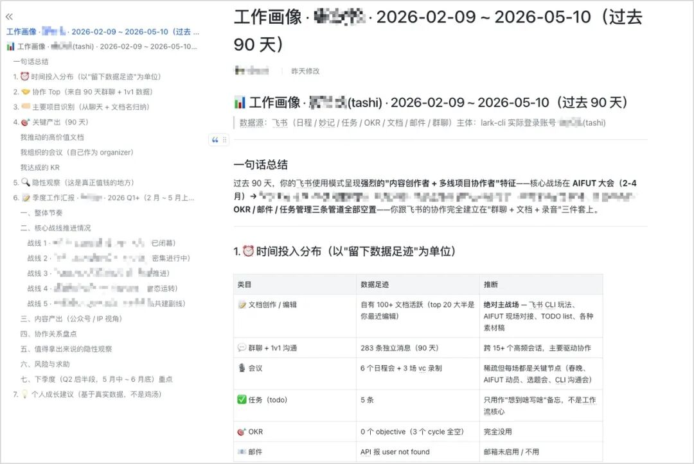
那如果博主反馈有问题，机器人会把博主反馈的问题转发给对应的同事。
这时候，对接的负责人就会收到机器人的私信。
我对天发誓，整个过程都是机器人自动做的，我们只需要在群里@机器人对账，然后博主给出相应的反馈，整个过程都是自动的。
当然，如果你想提高私信的重要程度，你甚至可以，让Agent以你账号的名义直接发私聊消息，现在飞书CLI也支持以你本人名义发消息了。
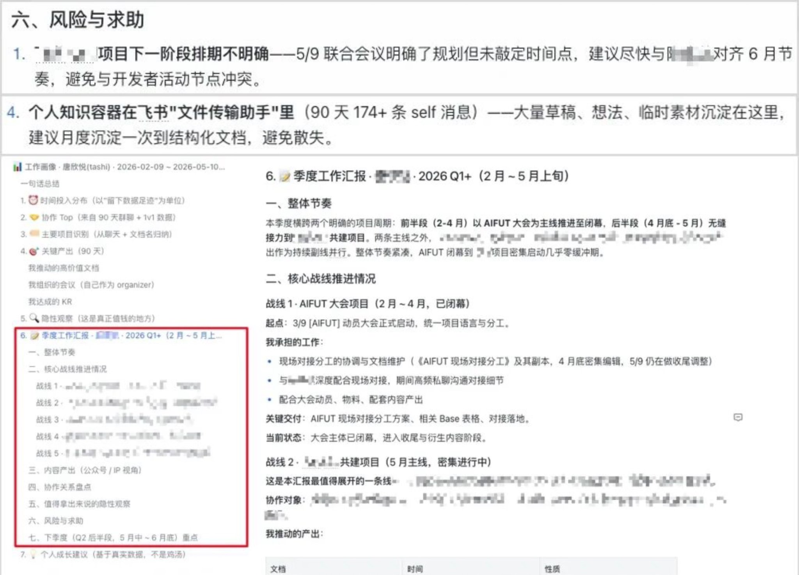
这个玩法也能很简单套到很多业务上，只要替换机器人查什么数据、反馈分几类、分流给谁，就能直接复用。
比如客户回款核对、订单异常处理、合同到期提醒、甚至年终发奖金前的数据核对等等。
4. 生成可协同的画板
第四个是飞书最近新放出来的一个能力，画板。
一句话，让它生成一张能全员协作编辑的结构图，这个我觉得还是挺有意思的。
用Agent生成HTML来画一些信息图啥的其实也不是啥新鲜事了，网上应该能见到很多很多这样的案例。
但区别在于，当你把Claude Code跟飞书的画板结合的时候，这里吐出来的不是一个HTML网页或者是图片，出来的是飞书原生的画板，你可以分享给团队里任何人，他们打开都可以拖动、改文字、加节点、改连线。
可复用的协同能力，这个其实是我非常非常看重的，以前做出来的HTML的内容啥的，我想跟同事一起协同，其实很费劲。
我自己试下来比较顺手的一个场景是，开会的时候把口头讨论的架构或者流程，让Agent当场出一张丢到群里，然后大家一起在上面边改边讨论。
比如我跟AI讨论我的AIHOT架构图，我想跟同事协同，让他们看看这个架构是怎么做的，我就可以直接让Claude Code配合飞书，直接给我生成一个画板。
然后，就直接出了一个这样的画板，非常详细，且每个节点，都是你的同事们，可以随意编辑随意修改随意拖动的。
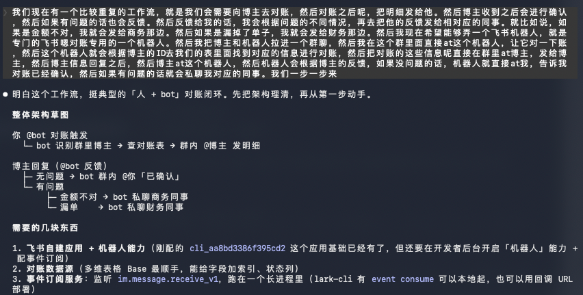
还有像之前我们的AIFUT大会，讨论出来的观众入场流程是一大段文字，看起来真的挺费劲的，我就试了试丢给他。
提示词也很简单。
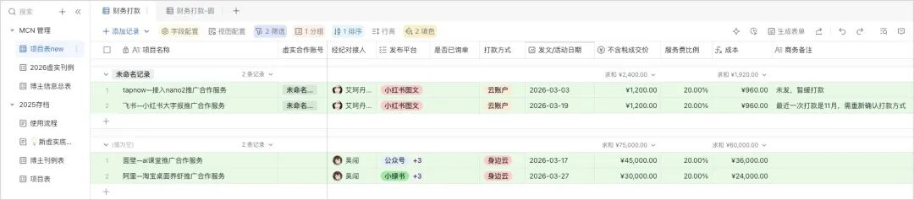
没几分钟，一个流程图的画板就出来了。
所有人都可以在上面接着协同修改，这个香爆了。
而且，因为这是画板，所以，你完全不止可以做架构图和流程图，你甚至还可以做，PPT。
而且可以随意修改，随意分享，随意编辑。
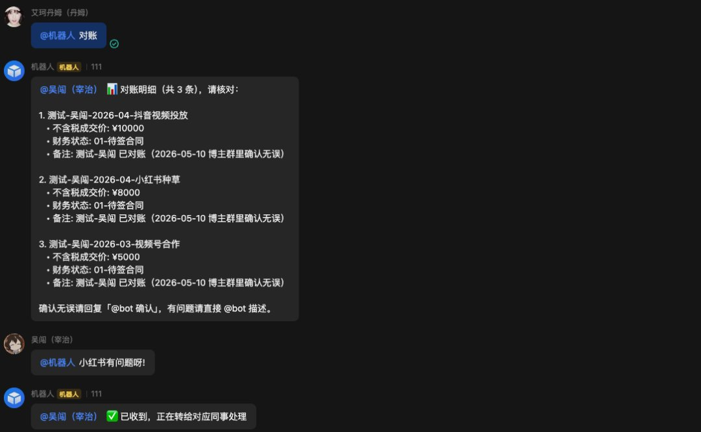
协同，协同，还是协同。
5. 自动报销和审批
第五个是我们一个小伙伴今天刚跑通的，把整个报销申请和审批，都让Claude code来做。
报销这个事有多麻烦，我就不多说了，工作过的都懂。
然后我们这个小伙伴，直接跟claude code说收发票的邮箱（她把收发票的邮箱直接填成了公司的飞书邮箱），然后让他去知识库里找报销SOP，照着SOP填写报销申请。
然后他就会先去指定的邮箱搜索。
整理好发票。
然后他能自己在飞书上发起报销申请，但是在发起前会先跟我们进行确认。
我们确认后就完成了。
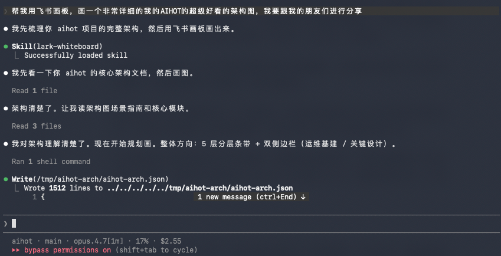
然后审批人就能看到刚刚提交的报销。
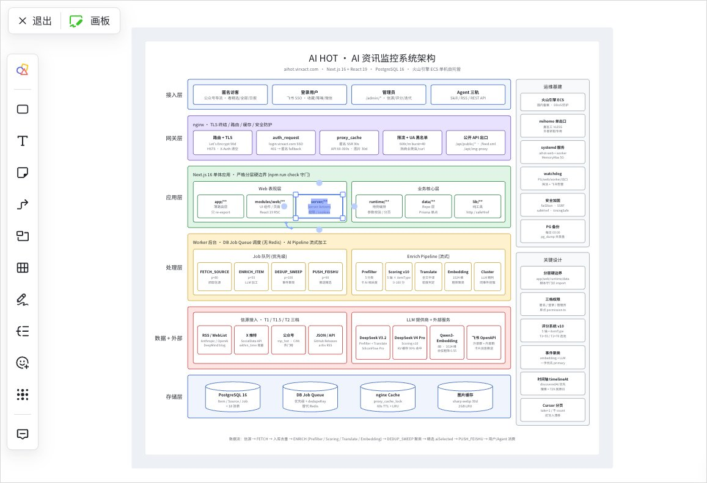
我们财务下午看到都惊了。
那其实除了帮我们提报销，在审批这一端，也可以直接让他来做。
他会去核对各种信息。
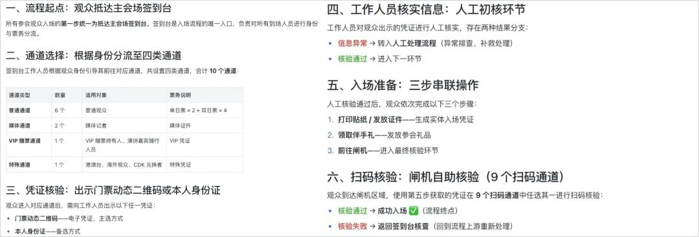
然后汇总到一起和我确认。
我确认后就审批通过了。
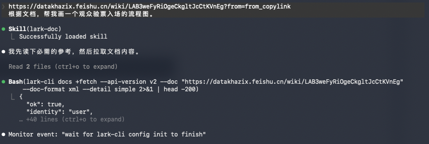
并且还根据具体情况给了审批意见。
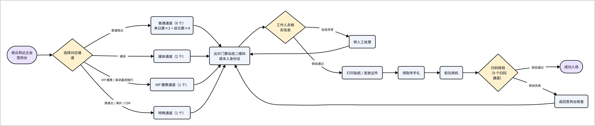
这一套跑下来，整个报销从发票整理到审批完成，都是直接跟Claude code对话，完全不需要打开飞书。
而且这种用法只要换个壳，套到出差申请、采购申请等等流程上都适用，骨架完全一样，无非就是信息收集、匹配模板、提交、追踪反馈。
写在最后
上面的场景，都是我们自己公司在用的，但是肯定没法展示Agent+飞书的全部能力，也仅做一个抛砖引玉。
最后简单总结一下。
现在飞书CLI已经是开源的，可以直接在GitHub上拿，覆盖15个业务域、114个能力。
也可以把这段Prompt，直接发给你的Agent，让它给你装：
帮我安装飞书 CLI：https://open.feishu.cn/document/no_class/mcp-archive/feishu-cli-installation-guide.md
现在因为能力实在是太多了，我直接帮大家，做了一个能力的全面总结，可能会有点长，因为实在是太多了。
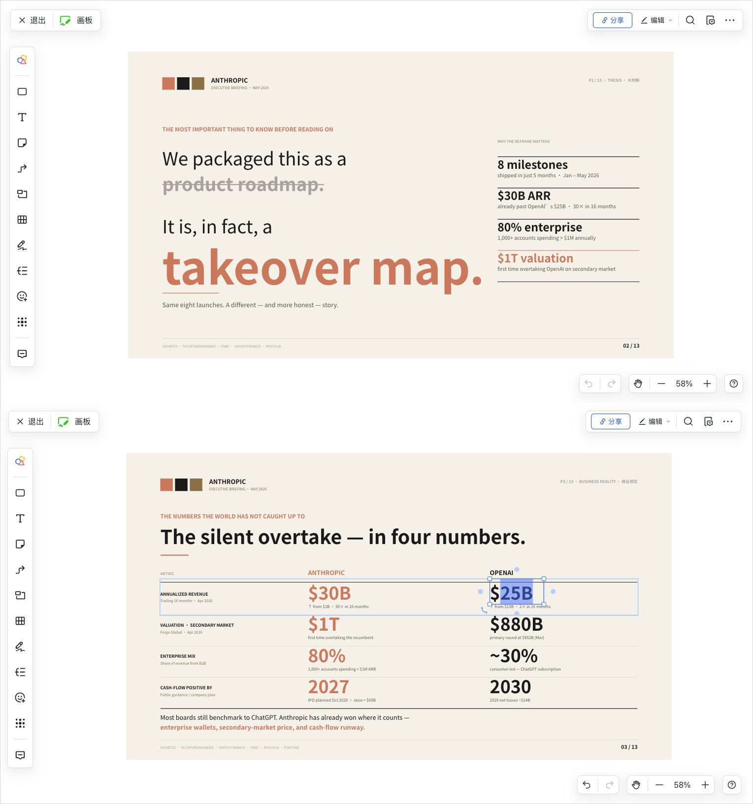
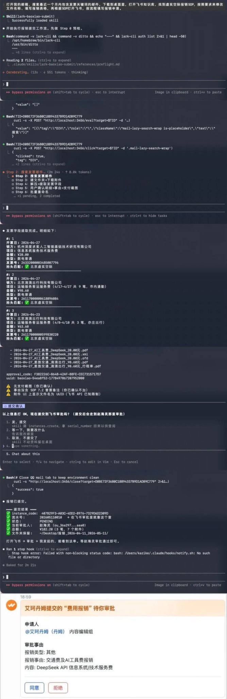
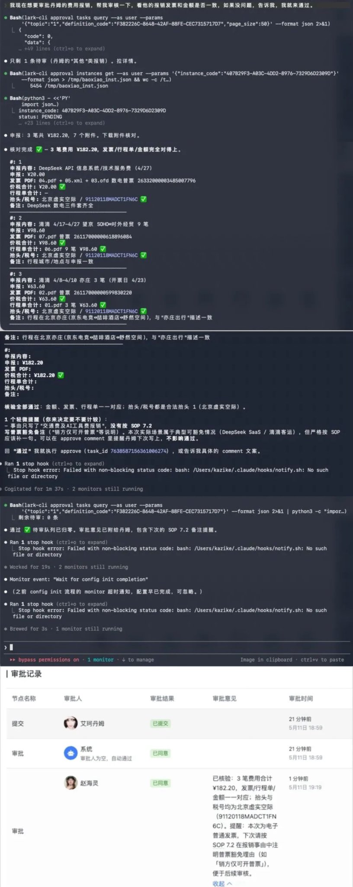
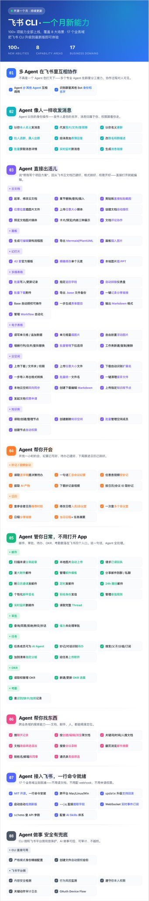
现在我觉得，Agent几乎已经趋于两种协同形式了。
一种是本地自己玩，另一种是在公司里，跟同事强协同的。
甚至都可以机器人@机器人，AI之间自己协同了。
这块我觉得除了飞书之外，真的没有任何一个替代品。
用Agent来操控飞书，形成多方位的提效和协同，可能就是现在很多组织进化的一个很有用的要素。
等啥时候，飞书把所有的能力全都开放，整个飞书几乎全面CLI化的那一天。
那我觉得，我们的办公与协同方式，可能就会迈向了一个全新的时代了。
希望上面这些场景，能对大家有一点启发。
>
>
Claude Code + Feishu を使った超実用的なAgent業務活用法を5つ紹介します。
最近、Agentを使ってどのように様々なデータとやり取りしているのか、よく聞かれます。
私はデータを明確に分けています。一部はローカルデータ、一部はFeishu上のクラウドデータです。現在当社は約30名の従業員がいますが、同僚と協働する必要があるものはすべてクラウドに上げるよう指示しています。
そのため、実際のところ多くのインタラクションは、Claude Codeに直接Feishuとやり取りさせています。当社のメンバーも同様で、グラフィカルインターフェースを使う時間の割合がむしろどんどん減っています。
以前、Feishu CLIが初めてオープンソース化された時、記事を書きました。「Feishu CLIがオープンソース化、Claude CodeでもFeishuをスムーズに操作できるように」非常に多くの反響をいただきました。
あれから1ヶ月が経ち、Feishuは陰で着々と機能を追加し続け、昨日集計してみると、なんと約120項目にもなっていました。
かなり驚異的です。CLIで開放された機能が、もうすぐAPIに追いつきそうな勢いです。これは本当にすごいことです。
今や、Claude CodeなどでFeishuを操作する場合、それほど高度でギークな要求がなければ、ほぼすべてのことができます。
機能の完全なリストはFeishuオープンプラットフォームに掲載されています。
URLはこちら：
https://open.feishu.cn/changelog?abilityType=Tool
GitHubでは、Feishu CLIのスター数ももうすぐ1万に届こうとしています。
そこで、私たち自身がAgentとFeishu CLIを連携させた事例を共有したいと思います。かなり面白い内容だと思います。
その過程で、本当にいくつか感動的な瞬間がありました。
では、早速始めましょう。
1. 会議シリーズごとにクロスセッション知識ベースを構築
最初に共有したいのは、私たちがすでに使い始めていて、本当に価値があると感じているシナリオです。会議シリーズごとに、複数回のセッションにまたがる知識ベースを構築するというものです。
社内では毎週、研修会、週次会議、振り返り会など、繰り返し発生する会議がたくさんあります。
しかし、これらの会議には共通の欠点があります。終了後、Feishuに記録が残るものの、せいぜい会議直後に見直す程度で、長期的には誰も追跡しません。
時間が経つと、問題が明らかになってきます。
例えば、ある企画会議で長期テーマについて議論したことがありました。そのテーマ自体は休暇後に発生するもので、その時は全員が良いと思ったのに、休暇が明けて出社すると、誰もそのことを言い出さなくなりました。
また、新しいメンバーが入ってくるたびに、私たちの企画会議の流れや、企画に対する要件や好みを早く理解してほしいと思います。長期間にわたって蓄積された実際の企画会議のデータは、新人にとって最高の教材です。
しかし、整理も蓄積もされず、これまでのデータは完全に無駄になっていました。
企画会議を例に取ると、プライバシーのため3月のデータを使用しています。
Feishu CLIがあれば、Claude Codeで直接FeishuのCLIを呼び出してやり取りできます。
すぐにFeishuドキュメントが生成されました。
会議リスト、企画の転換分析、会議のリズム、意思決定メカニズム、現象、提案、すべて網羅されています。
本当に、Agentが直接Feishuにアクセスしてデータを取得し、このようなコンテンツを整理してくれるのは、究極の快適ゾーンです。以前は手動でエクスポートしてAgentで整理する必要があり、非常に面倒でした。
とにかく究極的に詳細で、各企画会議で議論された企画、最終的な決定、そしてその理由まで全て記載されています。
この中の多くの情報は、知識ベースに蓄積できる経験素材です。
このように、繰り返される会議の経験を保存し、様々な側面に再利用でき、固定の知識ベースとして保存することで、将来的な知識のアーカイブが容易になります。
社内の研修会も同様で、過去の研修会を抽出して知識ベースとして蓄積するよう指示するだけです。
その後、定期的に関連する会議情報を自動的に取得し、自動更新・保守させるのは、Claude Codeを開いて一言指示するだけです。
そして、こうして蓄積された知識ベースは、すべての企業にとって貴重な経験になると信じています。
2. Agent + Feishu で総合的な仕事の振り返り
2つ目の使い方は、同僚に非常に好評で、自分自身の総合的な仕事の振り返りを行うことです。
私がいつも言っているように、当社は完全にFeishu上で成り立っており、すべての同僚が毎日Feishuの中で仕事をしています。
残される様々なデータは非常に貴重ですが、個人メッセージ、グループチャット、会議、ミョウキ（議事録）、スケジュール、タスク、メール、ドキュメント、OKRなど様々な場所に分散しており、自分自身で横断的な分析を行うことは不可能です。
だからこそ、こうした業務はAgentに任せるのが最適です。
例えば、同僚の一人に過去7日間、30日間、または90日間のデータを一気に取得させると、そのデータを使ってできることがたくさんあります。
この同僚はこれを直接skillとして作成し、社内のSkill Hubに置いて全員が使えるようにしました。
ある同僚のアカウントでデモを行い、四半期レポートを作成してもらいました。
たった一言で起動します。
すると、8つの並列ルートでメッセージ、会議、ミョウキ、スケジュール、タスク、メール、ドキュメント、OKRのデータを取得し、分析します。
最終的に、非常に包括的なドキュメントが生成されます。そこには、一言まとめ、時間投入分布、コラボレーション状況、主要プロジェクト、成果、そしてこれらのデータに対する洞察や提案が含まれています。
例えば、あるプロジェクトのスケジュール漏れを発見します。
Feishuの「ファイル転送アシスタント」にあるものを毎月構造化ドキュメントにまとめることを提案します。
最後には完全な四半期報告書も添付されています。
Feishuには大量の実際のコンテキストがあるため、生成されたドキュメントは実際に使用できるもので、文字数を稼ぐだけの粗悪なレポートではありません。
そしてこれはまだ出発点にすぎません。
その後、自分のニーズに応じて、このプロファイルをWebページ、PPT、多次元テーブルのダッシュボードにすることも、すべてスムーズに行えます。
思考が生まれ、成果が生まれる。しかも、無意味な実行に多くの時間を取られることもない。素晴らしいと思います。
3. 反復的な連携プロセスの自動化
3つ目は、私が最も達成感を感じたものです。
当社の収入の大部分は、AI分野のメディアおよびMCN事業によるものです。独自のエージェントチームがあり、毎月ブロガーに支払いを行うため、経営部門は毎月決まった時期に協力ブロガーとの間で請求書の確認を行い、金額、プロジェクト、漏れの有無を確認します。
以前の方法では、Agentが多次元テーブルからプロジェクトと金額を調べることはできましたが、最後の1マイルは人間が対応していました。毎月数百人のブロガーとやり取りする必要がありますが、エージェントはわずか3人。そのため、請求詳細をグループに貼り付け、ブロガーの返信を待ち、ブロガーのフィードバックに応じて異なる同僚に振り分けるという、非常に多くの反復的なコミュニケーションが発生していました。
現在、FeishuがCLI機能を開放したことで、このプロセスはAgentを使って小さなツールを開発し、完全にFeishuボット上で動作させることができます。
そこで社内でのイテレーションを開始しました。今回は次のようなフローで実行します。まずブロガーとボットを同じグループに招待し、グループ内でボットを@メンションして請求確認を依頼します。ボットは多次元テーブルからそのブロガーに関連するプロジェクトデータを取得し、グループ内でブロガーを@メンションし、今月のすべての合作プロジェクト、金額、備考を明記して確認を求めます。
ブロガーがフィードバックした後、ボットを@メンションすると、ボットはフィードバック内容に基づいて自動的に振り分けます。金額が合わなければ営業担当にレートカードの確認を通知、漏れがあれば財務担当に追加依頼を通知、問題がなければ私に@メンションして請求確認完了を知らせます。
私は単純明快に、音声をテキストに変換して、自分の要件をそのまま口頭で伝えました。
Feishu CLIのおかげで、ボットを開放するコストは限りなく低くなりました。APIやイベントコールバックなどを知る必要は全くなく、そのまま完了します。
そして、作成したボットとブロガーをグループチャットに招待しました。
ブロガーのプライバシーを保護するため、ダミーデータを使用し、同僚のアカウントでテストしました。
グループ内で直接ボットを@メンションして請求確認を依頼します。
ボットは自らテーブルからデータを取得し、請求詳細を生成してグループに送信し、ブロガーを@メンションして確認を求めます。
ブロガーから問題なしとのフィードバックがあれば、請求確認完了を通知します。
ブロガーから問題があるとのフィードバックがあった場合、ボットはその問題を該当する同僚に転送します。
すると、担当者がボットからのダイレクトメッセージを受信します。
断言しますが、このプロセス全体がボットによって自動的に行われます。私たちはグループでボットを@メンションして請求確認を依頼し、ブロガーがフィードバックを返すだけ。全体のプロセスが自動化されています。
もちろん、ダイレクトメッセージの重要度を高めたい場合は、Agentにあなたのアカウント名義で直接メッセージを送信させることさえ可能です。現在、Feishu CLIはあなた本人名義でのメッセージ送信もサポートしています。
この方法は他の多くの業務にも簡単に適用できます。ボットが検索するデータ、フィードバックの分類、振り分け先を入れ替えるだけで、直接再利用できます。
例えば、顧客の入金確認、注文の異常処理、契約満了のリマインダー、さらには年末のボーナス前のデータ確認などに応用できます。
4. 共同編集可能なボードの生成
4つ目は、Feishuが最近リリースした新しい機能、ボードです。
一言で、全員が共同編集できる構造図を生成させる。これはとても面白いと思います。
Agentを使ってHTMLを生成し、情報図などを描くこと自体は新しいことではなく、ウェブ上で多くの事例を見ることができます。
しかし違いは、Claude CodeとFeishuのボードを組み合わせた場合、生成されるのはHTMLページや画像ではなく、Feishuネイティブのボードだということです。チームの誰とでも共有でき、相手が開けばドラッグ、テキスト編集、ノード追加、線の変更がすべて可能です。
再利用可能な共同編集機能、これは私が非常に重視している点です。以前はHTMLコンテンツなどを同僚と共同編集するのが非常に面倒でした。
自分で試して使いやすいと感じたシナリオの一つは、会議中に口頭で議論したアーキテクチャやフローを、Agentにその場でボード化させてグループに投稿し、全員で修正や議論を行うことです。
例えば、私がAIとAIHOTアーキテクチャ図について議論し、同僚と協働してこのアーキテクチャがどのように機能するかを見てもらいたい場合、Claude CodeとFeishuを組み合わせて、直接ボードを生成させるだけです。
すると、非常に詳細なボードが生成され、各ノードは同僚が自由に編集、修正、ドラッグできます。
また、以前のAIFUT大会で議論した観客の入場フローは、長文のテキストで読みにくかったので、試しにAgentに渡してみました。
プロンプトも非常にシンプルです。
数分もしないうちに、フローチャートのボードが出来上がりました。
全員がその上で共同編集や修正ができ、これは本当に素晴らしいです。
そして、これがボードであるため、アーキテクチャ図やフローチャートだけでなく、PPTを作成することも可能です。
しかも自由に修正、共有、編集が可能です。
共同編集、共同編集、とにかく共同編集です。
5. 経費精算と承認の自動化
5つ目は、同僚の一人が本日稼働させたもので、経費精算の申請と承認のすべてをClaude Codeに行わせるというものです。
経費精算がいかに面倒かは、言うまでもありません。働いたことがある人なら誰でもわかります。
この同僚は、Claude Codeに請求書受信用のメールアドレス（彼女は会社のFeishuメールアドレスを直接設定）を伝え、知識ベースから経費精算SOPを探し出し、それに従って経費精算申請書を記入するよう指示しました。
すると、まず指定されたメールボックスを検索します。
請求書を整理します。
そして、Feishu上で経費精算申請を自ら起動できますが、起動前にまず私たちに確認を求めます。
確認後、完了となります。
承認者には、提出された経費精算が表示されます。
午後、経理が見て驚いていました。
経費精算の提出だけでなく、承認側でも直接Agentに任せることができます。
様々な情報を照合します。
そして、まとめて私に確認を求めます。
私が確認すると、承認が通過します。
さらに、状況に応じて承認コメントが付けられます。
この一連の流れにより、経費精算の請求書整理から承認完了まで、すべてClaude Codeとの対話で完結し、Feishuを開く必要が全くありません。
そして、この方法は外側を変えるだけで、出張申請や購買申請などあらゆるフローに適用できます。骨格は完全に同じで、情報収集、テンプレートマッチング、提出、追跡・フィードバックの流れです。
おわりに
上記のシナリオは、すべて当社が実際に使用しているものです。もちろん、Agent + Feishuの全機能を紹介できているわけではなく、あくまで参考としての紹介です。
最後に簡単にまとめます。
現在、Feishu CLIはオープンソース化されており、GitHubから直接入手できます。15の業務領域、114の機能をカバーしています。
以下のPromptをそのままAgentに送ってインストールさせることもできます：
Feishu CLIをインストールしてください：https://open.feishu.cn/document/no_class/mcp-archive/feishu-cli-installation-guide.md
機能が非常に多くなったので、皆さんのために包括的な機能サマリーを作成しました。少し長くなるかもしれませんが、それだけ多くの機能があります。
現在、Agentはほぼ2つの協働形態に収束しつつあると感じています。
一つはローカルでの個人利用、もう一つは会社での同僚との高度な協働です。
さらには、ボットがボットを@メンションし、AI同士が自律的に協働することさえ可能です。
この点において、Feishu以外に真の代替品は存在しないと思います。
Agentを使ってFeishuを操作し、多角的な効率化と協働を実現することは、多くの組織の進化における非常に有用な要素かもしれません。
いつかFeishuがすべての機能を開放し、Feishu全体がほぼ完全にCLI化される日が来れば、
オフィスワークとコラボレーションの方法は、まったく新しい時代を迎えるでしょう。
上記のシナリオが、皆さんの何らかのヒントになれば幸いです。
>